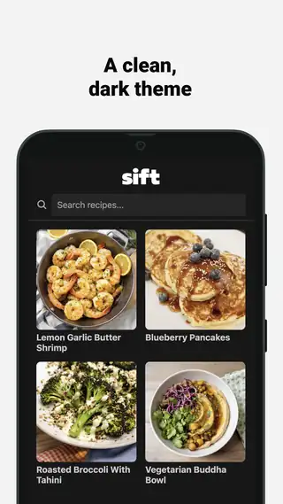
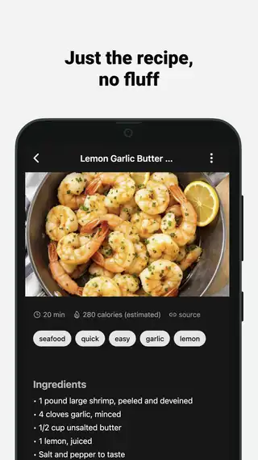

Sift
مال وتسوق
Sift is a minimalist recipe keeper. It uses AI to extract just the recipe from a website, leaving out ads and long stories. You get a clean, easy-to-read recipe. - Import recipes from any website using AI by connecting to a LLM provider - Add recipes manually - Edit and organize recipes with custom
✓ ترخيص مفتوح (MIT) · آخر تحديث: 2026-05-12
1.0.7الإصدار
75.0 MBالحجم
MITالرخصة
Open in Kanzتحميل APK (75.0 MB)
Download APK
SHA-256: fdc68ce83806767d43b057aaa5db12c8eead58093623f09f37fec9928507244e


امسح الكود لفتح صفحة التطبيق
Scan to open this app page
لو كنز مش متثبت عندك: نزّل متجر كنز.
Not installed? Get the Kanz store.